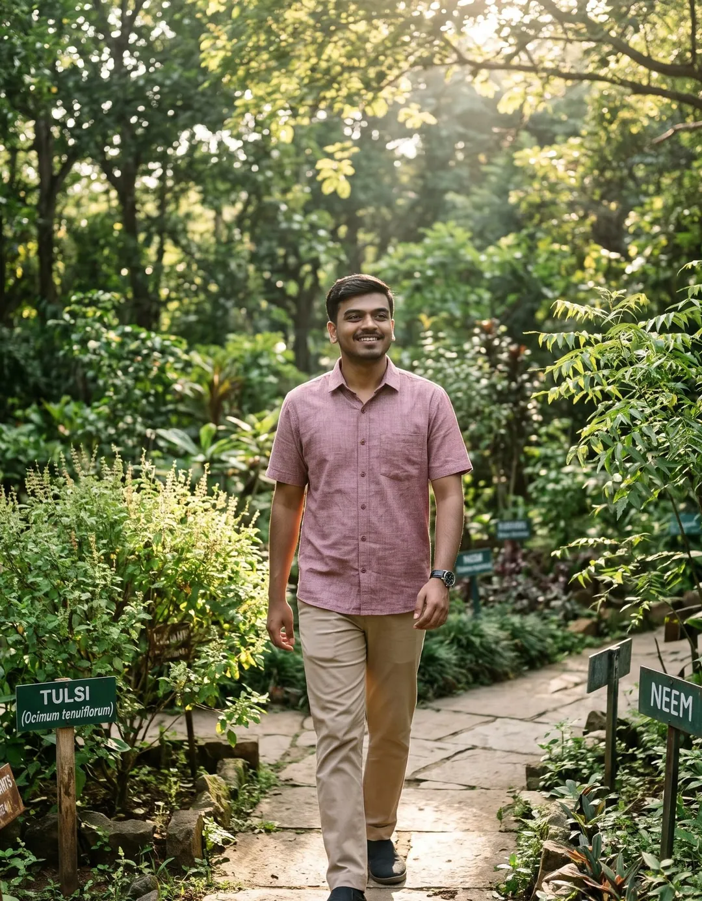

Our Mission
To offer classical Panchakarma in Patna with a doctor's care at every step, explained in plain words and planned around each patient's health.
Sabka Ved Wellness is a Panchakarma and Ayurvedic therapy centre near Bajrang Puri, Patna, run by Dr. Aditya Kunal, BAMS.

To offer classical Panchakarma in Patna with a doctor's care at every step, explained in plain words and planned around each patient's health.
A centre families trust for seasonal care and recovery, where the right answer is sometimes a smaller plan, or none at all.
Panchakarma follows the order described in the classical texts: preparation, main therapy and recovery. We keep that order and adjust the intensity to you. Read more about Dr. Aditya Kunal on his personal site.